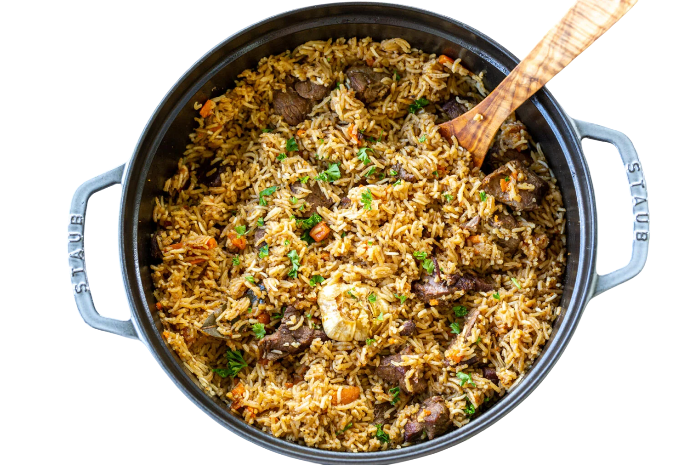
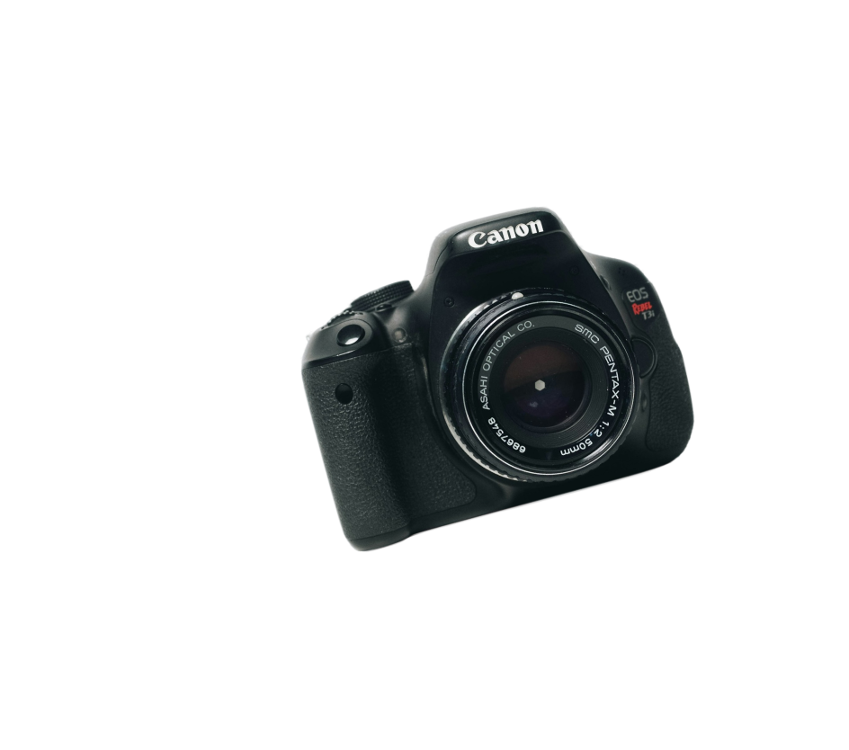

Menu
Beranda
Jelajahi Uzbekistan
Kondisi Geografis
Destinasi & Wisata
Tokoh Inspiratif
Paket Wisata
Cita Rasa
Nilai Global
Galeri
Tentang Kami
Galeri Uzbekistan

Tertarik menjelajahi keindahan Uzbekistan secara langsung?
nikmati pengalaman perjalanan tak terlupakan dengan paket travel lengkap
yang telah kami sediakan
